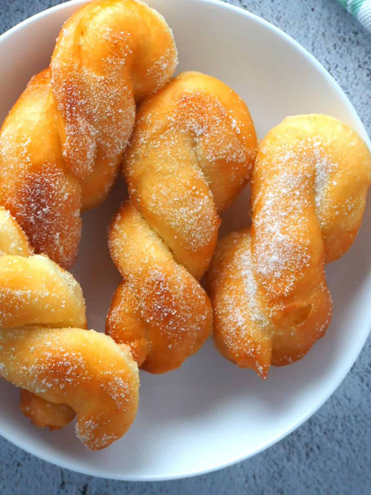

Bicho-Bicho

Ingredients
| 2¼ tsp active dry yeast |
| ¼ cup warm water |
| 1 tsp sugar |
| 4 cups all purpose flour |
| 1 cup fresh warm milk |
| 1 egg |
Preparation
| Step 1 |
| Dissolve yeast in warm water and a tsp of sugar. Set aside for 5 minutes until it bubbles. In a standing mixer, fitted with dough hook, add 2 cups flour, salt, milk, butter, egg and the yeast mixture. Mix. |
| Step 2 |
| Pour the rest of the flour. Blend until the dough is smooth and elastic. Place the dough in a greased bowl and let it rise for an hour.Meanwhile cut some cheese and set aside. |
| Step 3 |
| Once the dough doubles in size, divide the dough into 16 - 18 parts.Using a rolling pin, shape the dough into a rectangle. |
| Step 4 |
| Open the stove to medium- high temperature. Pour oil in a frying pan. Once the oil is hot, put the dough to fry. Flip the dough on both sides until it is golden brown. |